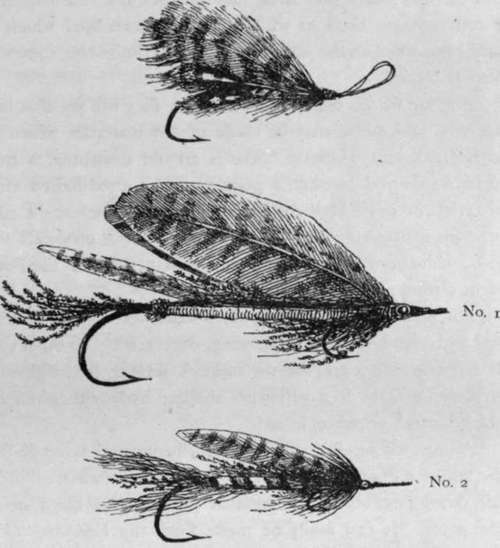

Fly Fishing In The Sea. Part 6
Description
This section is from the book "Sea Fishing", by John Bickerdyke. Also available from Amazon: Sea Fishing.
Fly Fishing In The Sea. Part 6
Beginners have a habit, when a fish is exhausted, of reeling in too much line. If your rod is fifteen feet and you reel up until only ten feet of line remain below the rod point, it is obvious that the fish can never be brought close to the boat. To decide exactly how much line to reel in requires some judgment, but the word of warning on the point is advisable.
When playing a fish from the shore and you are about to land him, reel up until he is within twenty feet of the point of the rod, let us say ; and then, if the ground will permit it, walk slowly backwards. Your attendant should be stooping down, gaff in hand, and you must try to bring the fish to his feet. If you are alone you must, of course, do the best you can. Get the fish well played out, and just a proper length of line reeled up ; so that when the rod is nearly perpendicular the fish can be brought to the desired spot. Then, with the gaff in the right hand, and the little finger of the left hand pressing on the rim of the reel to prevent it revolving, use the gaff with the right hand.
A word as to the manner of gaffing. I have a lively recollection of an old Norwegian farmer whose services I solicited in the matter of landing a 13-lb. sea trout. He had never used a gaff before, and knelt down and began stroking the back of the fish with it. The best place to gaff a fish is the best place you can. If the line is in the way take him under the belly, but give the preference to the back. If he affords you a fair chance, lay the hook neatly over him, and then give a pull towards you, sharp and sudden, such as would bring a horse on to his haunches. If the hook takes hold, at once turn the handle of the gaff into a perpendicular position, which will help to prevent the fish kicking off and the stick from breaking. The power of fish lies almost entirely in their tails ; so that if you gaff a large fish in the middle of the back or shoulder, he may work his natural propeller so vigorously as to smash the gaff or break away from the hook. With large fish, therefore, the best plan is, if possible, to get the gaff well in near the tail. The big creature is then helpless. If you have any reason to think your gaff is not strong enough to lift him out, walk backwards, draw him tail foremost on shore, and knock him on the head as quickly as possible. When in a boat, a gaffer may be obliged to lay hold of the fish with middle finger and thumb of left hand across the back of the neck, in addition to lifting him in with the gaff stuck in near the tail and held in the right hand.
It is worth bearing in mind that, however strong one's tackle, very large fish cannot be lifted safely in by means of the fishhook ; not that the tackle will necessarily break, but the fish's flesh may give way if the creature is very heavy. In anglers' language, the hook will tear out or break away.
For small fish —anything under 5 lbs.—a large landing net is certainly preferable to a gaff; but I will repeat here what I have already stated in an earlier chapter, that, if neither landing net nor proper gaff is forthcoming, a large hake hook with the barb filed or hammered down, lashed on the first available stick, is a very excellent substitute. A steel meat-hook makes a very fair gaff. These remarks on landing big fish apply perhaps more to pollack than bass, for the largest bass are not commonly caught by the fly fisher.
Pollack and coalfish are frequently classed together in sporting literature ; but their habits are more dissimilar than their appearance. On the Devonshire coast I am well within the mark in saying that many thousands of small pollack are caught on flies in the spring of the year. The usual tackle, however, is a kind of glorified paternoster with a number of flies or Belgian grubs (see p. 139) instead of hooks and baits. This arrangement is trailed behind a boat, and the little fish are often caught half a dozen at a time ; it is a case of quantity rather than quality. This I hardly call fly fishing. I am now-more concerned with casting a bait of some kind by means of a fly rod.
On many parts of the Scotch coast small pollack and coalfish swarm during the summer months, and take a white fly greedily in the evening. The whitebait fly is killing. There are few flies which, if large enough, they will not take, but they appear to have a weakness for a white wool body and a white wing, the size depending on size of fish. If a little red tail and some gold or silver tinsel ribbing for the body are added, the fly will be none the less killing. The sole-skin and imitation sand-eel baits already described are very attractive to pollack, which will also take large feather baits or flies as you may please to call them.
Mr. Moodie-Heddle, of Orkney, sent me the following dressing for a cheap and effective fly on a large-sized cod hook. Tie on a body of orange and black, well barred in strips of half an inch in width, and lay over the back of the body a few strands of peacock harl, or two whole feathers tied down at the tail. Wings either white swan's feather, two sides tied over one behind the other, or two whole speckled turkey's or drake's feathers.
The two larger patterns illustrated, which are also strongly recommended by Mr. Moodie-Heddle, can be made in the following manner. No. 1, brown or grey turkey feathers for wings (tied down at head), two feathers being placed face to face. Curlew feathers, one or two further back, and peacock feathers on head and tail of the bait. Beads for eyes ; red worsted at gills ; blue worsted for back ; pale yellow or greenish-yellow on belly. No. 2 is made in much the same style. Body red and black worsted with gold or silver tinsel; tail of heron's feather, cut out in centre to make it forked, and a few strips of peacock harl. For wings, two curlew feathers face to face, and, if needed by the size, a pair or single second wing further back. Some such flies have been used in Ireland for many years, and are mentioned in a book called ' Fly Fishing in Salt and Fresh Water,' published by Van Voorst in 1851. The smallest of the three flies is for use when small fish are plentiful, or when the water is clear and smooth.
THREE POLLACK FLIES (ORKNEY).
Continue to:
Tags
fishing, hooks, bait, fishermen, spanish mackerel, mackerel fishing